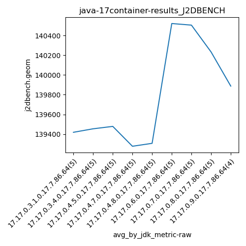
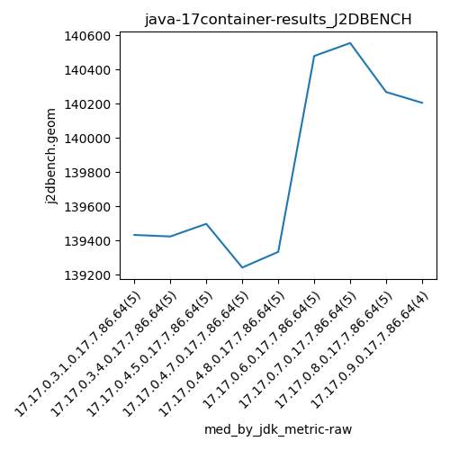
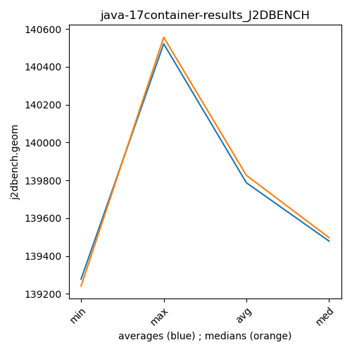

java-17 J2DBENCH
Context at bottom
/home/jvanek/git/benchmarks-in-nested-virtualisation-toolchain/final_results/container_results/container-results_JMH
java-17
J2DBENCH
/home/jvanek/git/benchmarks-in-nested-virtualisation-toolchain/final_results/container_results/container-results_RADARGUNs1
java-17
J2DBENCH
/home/jvanek/git/benchmarks-in-nested-virtualisation-toolchain/final_results/container_results/container-results_DACAPO
java-17
J2DBENCH
/home/jvanek/git/benchmarks-in-nested-virtualisation-toolchain/final_results/container_results/container-results_SPECJBB
java-17
J2DBENCH
/home/jvanek/git/benchmarks-in-nested-virtualisation-toolchain/final_results/container_results/container-results_RADARGUNs3
java-17
J2DBENCH
/home/jvanek/git/benchmarks-in-nested-virtualisation-toolchain/final_results/container_results/container-results_J2DBENCH
java-17
J2DBENCH
container-results_J2DBENCH
final score
Expected number of java-17 JDKs: 5
1st avgmed_alljdks_metric:
/home/jvanek/git/benchmarks-in-nested-virtualisation-toolchain/final_results/result_processing.py /home/jvanek/git/benchmarks-in-nested-virtualisation-toolchain/final_results/container_results/container-results_J2DBENCH j2dbench.geom False
values: [139309, 139355, 139432, 139557, 139442, 139569, 139472, 139423, 139400, 139408, 139383, 139518, 139440, 139556, 139497, 139491, 139220, 139342, 139241, 139093, 139380, 139243, 139432, 139147, 139333]

Expected number of iterations: 5
final number of values: 25 out of 25
Pass rate: 100.0%
values: (139093, 139569, 139387.32, 139408)

** accuracy from all jdks and runs
more is better
MIN: 139093
MAX: 139569
AVG: 139387.32
MED: 139408
Relative differences 1:
MIN-MAX: 0.0 %
MIN-AVG: 0.0 %
MIN-MED: 0.0 %
MAX-MIN: -0.0 %
MAX-AVG: -0.0 %
MAX-MED: -0.0 %
AVG-MED: 0.0 %
stored to java-17.properties. sort | uniq that!
2nd avgmed_by_jdk_metric:
values: [139419.0, 139454.4, 139478.8, 139277.4, 139307.0]

values: [139432, 139423, 139497, 139241, 139333]

values: (139277.4, 139478.8, 139387.32, 139419.0)
values: (139241, 139497, 139385.2, 139423)

** accuracy from all jdks where runs were avged
more is better
MIN: 139277.4
MAX: 139478.8
AVG: 139387.32
MED: 139419.0
Relative differences 1:
MIN-MAX: 0.0 %
MIN-AVG: 0.0 %
MIN-MED: 0.0 %
MAX-MIN: -0.0 %
MAX-AVG: -0.0 %
MAX-MED: -0.0 %
AVG-MED: 0.0 %
stored to java-17.properties. sort | uniq that!
** accuracy from all jdks where runs were medianed
more is better
MIN: 139241
MAX: 139497
AVG: 139385.2
MED: 139423
Relative differences 1:
MIN-MAX: 0.0 %
MIN-AVG: 0.0 %
MIN-MED: 0.0 %
MAX-MIN: -0.0 %
MAX-AVG: -0.0 %
MAX-MED: -0.0 %
AVG-MED: 0.0 %
stored to java-17.properties. sort | uniq that!
pass rates:
container-results_J2DBENCH=100.0%
Context:
- container_results
- J2DBENCH